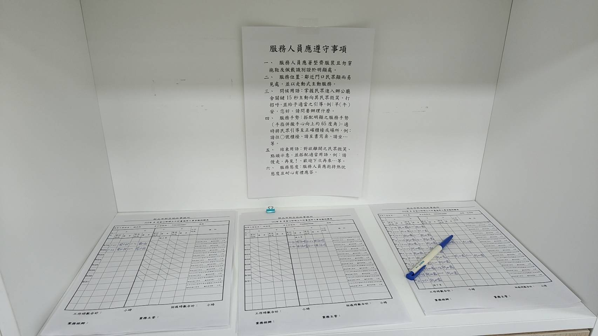
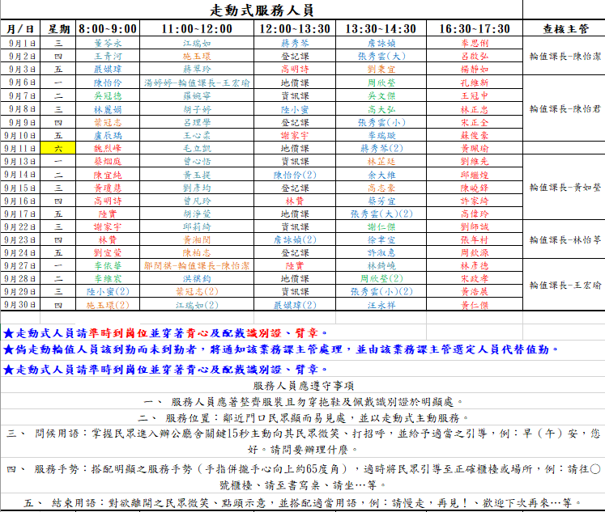

親民服務 - 神秘客查核
(一) 考評結果
本次考核期間，地政局於 110 年 10 月 15 日及 111 年 3 月 30 日至本所進行神秘客查核，查核結果簡要分述如下：
- 110 年 10 月 15 日：本次實地考評分數為 100分，各項皆無缺失，本所持續適時宣導同仁注意服裝整齊及接待禮貌，以維持佳績。
- 111 年 03 月 30 日：本次實地考評分數為 95分，除辦公秩序因「抽號碼機旁之服務人員坐於椅子上滑手機，並以坐姿將號碼牌遞交民眾，影響服務形象。」扣5分外，其餘項目均無缺失，缺失項目已由主管當場督責同仁改善，本所後續並將值勤相關須知納入教育訓練，且於值班表（或簽到簿）備註提醒文字，持續宣導同仁及志工知悉遵循，以維持為民服務品質。

